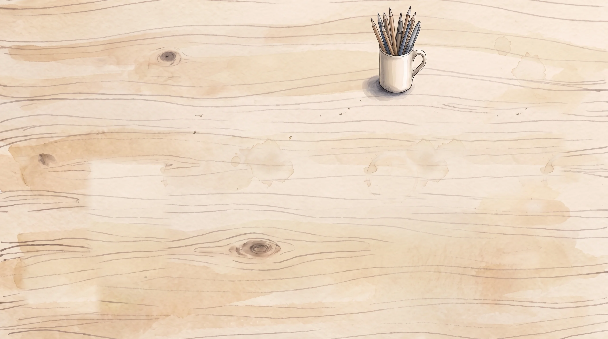
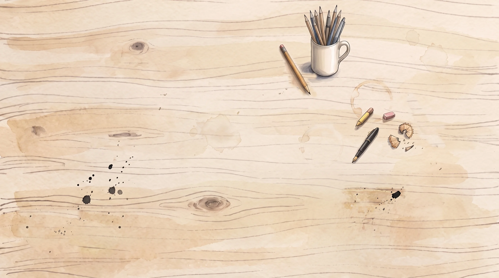
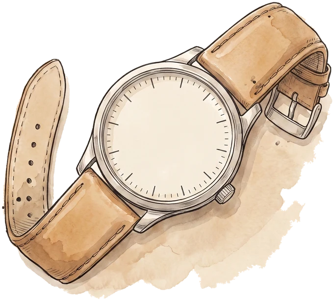
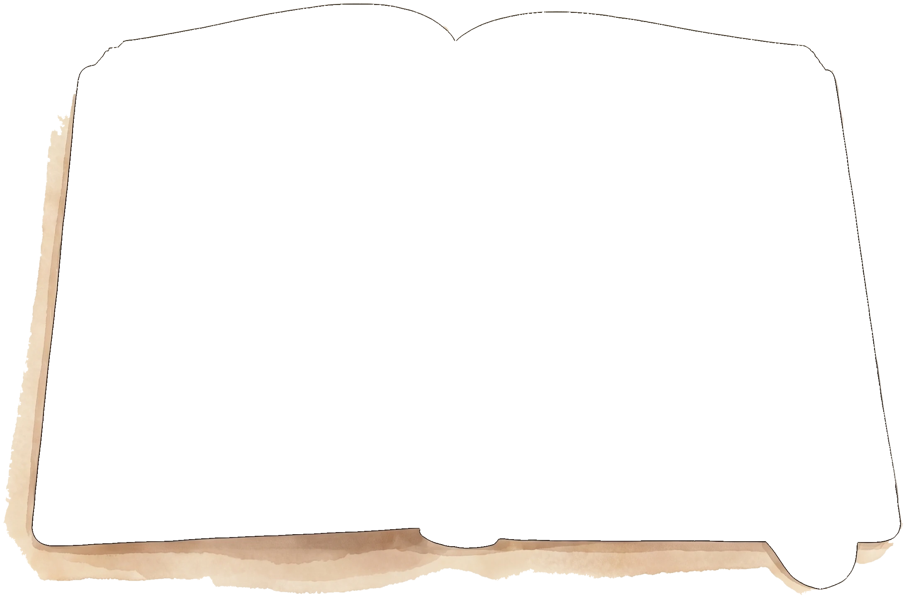

StudyVault
classic view
clean desk
S


NOW PLAYING · STAVE 3 — POVERTY & GENEROSITY · ENGLISH LITERATURE · 10 MIN ·
Revision Radio
left dial = change station
right dial = change track
312 days
to your first exam.
＋ new note

revision timer
25 min
15 min
5 min
stop
—
Shorts
today’s 20

×
tap the card to flip · tap again for the next one
×
 classic view
S
classic view
S
classic view
S
classic view
S
 NOW PLAYING · STAVE 3 — POVERTY & GENEROSITY · ENGLISH LITERATURE · 10 MIN ·
NOW PLAYING · STAVE 3 — POVERTY & GENEROSITY · ENGLISH LITERATURE · 10 MIN ·